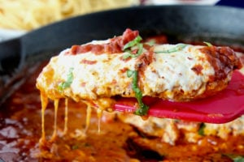

Description
Good old-fashioned chicken Parmesan gets the skillet treatment in this
one-pot dish. Serve with rice or spaghetti for comfort food at its
finest—and fastest!
The only thing you need to make this recipe happen is a good oven-safe
skillet for cooking everything. I use a cast iron skillet with high sides.
Ingredients
- 1 teaspoon salt
- 1 teaspoon black pepper
- 1 cup all-purpose flour
- 1 large egg
- 1 cup Italian breadcrumbs
- 1/2 cup grated parmesan cheese
- 1 1/2 to 2 pounds chicken cutlets
- 1 cup olive oil
- 1/2 cup diced onion
- 2 cloves garlic, sliced
- 2 cups marinara tomato sauce, homemade or store-bought
- 6 ounces mozzarella cheese, sliced
- Fresh basil, garnish
- Red pepper flakes, garnish
- Cooked spaghetti or rice, for serving
Steps
-
Preheat oven to 400°F and heat olive oil in a 12-inch oven-safe skillet
over medium heat.
-
Prepare your breading stations by stirring the salt and pepper with the
flour in one bowl, whisking the egg in a second bowl, and measuring
breadcrumbs and Parmesan cheese into a third bowl. Coat chicken cutlets
with seasoned flour. Dust off any extra flour. Transfer chicken cutlets
to egg mixture and coat. Then transfer to the breadcrumbs and coat.
Place breaded chicken on a plate.
-
You'll know the oil is ready when a few breadcrumbs sizzle immediately
when added to the oil (325°F). Add breaded chicken cutlets and fry for 4
minutes per side. The chicken should be 90 percent cooked through at
this point; it should not be 100 percent cooked through. (Just a note
though: You may need to fry in batches; if the pan gets overcrowded the
chicken may not crisp up to your liking.)Remove chicken from the
skillet, and carefully pour the olive oil into a bowl to cool, leaving
about a tablespoon in the skillet. Don’t rinse out the skillet.
-
Add the onion and garlic to skillet and cook over medium-low heat for 2
minutes, until onion is translucent. Add the marinara sauce and bring to
a low simmer.
-
Add the chicken back to the skillet in the sauce. Top each chicken piece
with a slice of mozzarella cheese. Place the skillet in the oven and
bake for 10 to 12 minutes until the sauce is bubbling, the cheese is
melted, and the chicken registers 165°F in the thickest parts.
-
Serve chicken Parmesan immediately over pasta, rice, or even with bread
and a salad. Garnish with red pepper flakes and fresh basil.